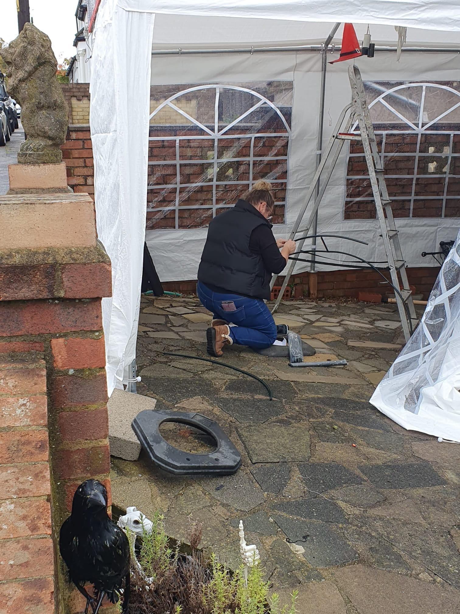
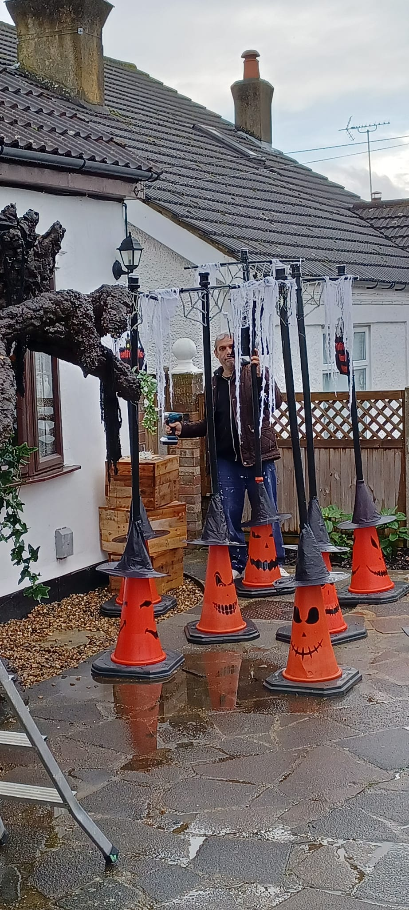
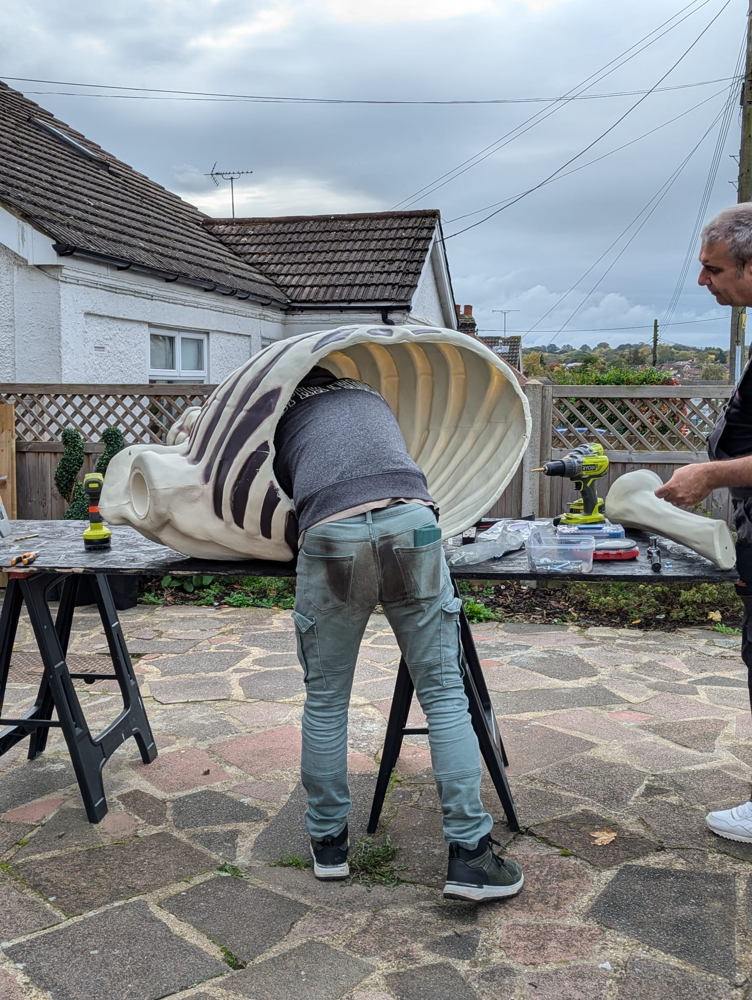

Behind The
Screams
The Manor does not awaken by itself. Meet the Boo Crew and see the planning, building, testing, lifting and last-minute problem solving that happens before the gates open.
The Boo Crew
PlantationVille is built and run by our Boo Crew: Peter Lawrence, Sonja Lawrence, Simon Lawrence, Amanda Wells, Paul Wells, Laura Andrews, Ryan Howard, Andrew Cook and Joe Warman.
Alongside them, Darcy, Bonnie, Arthur and Aida are the next generation of Boo Crew apprentices, learning what it takes to awaken the Manor.

Plan It. Build It. Rig It. Raise It.
Plan It
Working out the scene, placement, visitor flow and what needs to happen before Halloween.
Build It
Making, adapting and assembling the physical pieces that turn the house into the Manor.
Rig It
Lighting, power, sound, effects and the less glamorous details that make everything work.
Raise It
The final setup, dressing, testing and last-minute fixes before the gates open.
The Work Visitors Don't See
The finished display lasts one evening. The preparation does not. This is where we will document the build, the problems, the fixes and the final push to 4:30pm.


Boo Crew At Work
A changing selection from the build, setup and operation of PlantationVille.